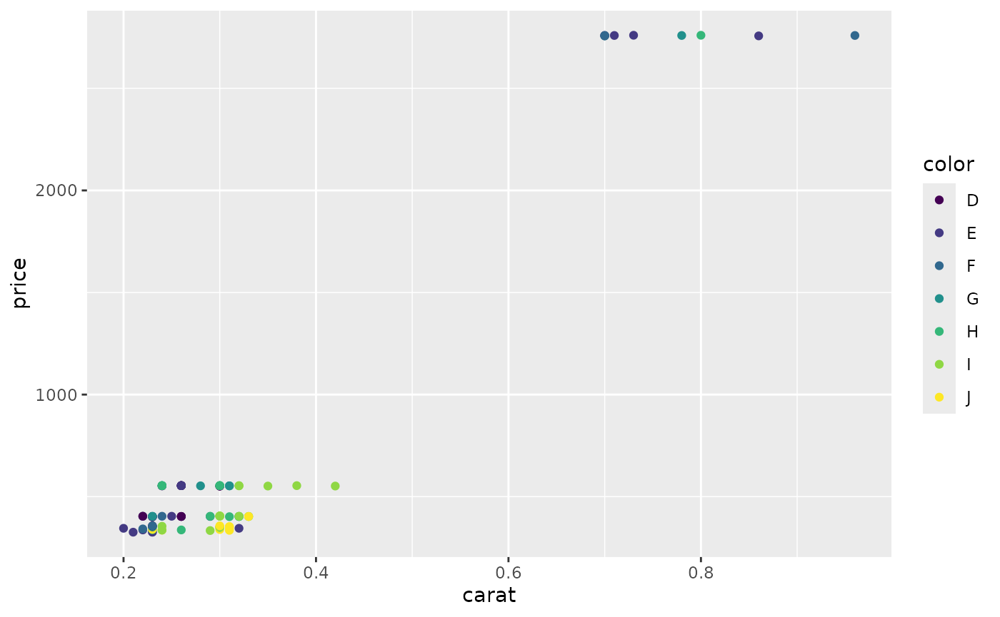

Testing the VI.ggplot() within the BrailleR package"
A. Jonathan R. Godfrey
Source:vignettes/qplot.Rmd
qplot.RmdThis vignette contained many more plots in its initial development.
The set has been cut back considerably to offer meaningful testing only,
and because much of the material was moved over to a book called BrailleR in
Action. Doing so also had an advantage of speeding up the package
creation, testing, and installation. N.B. the commands here are either
exact copies of the commands presented in Wickham (2009) or some minor
alterations to them. Notably, some code given in the book no longer
works. This is given a #!
The ggplot2 package has a summary method
that often but not always offers something to show that things have
changed from one plot to another. Summary commands are included below
but commented out.
## The BrailleR.View, option is set to FALSE.##
## Attaching package: 'BrailleR'## The following objects are masked from 'package:graphics':
##
## boxplot, hist## The following object is masked from 'package:utils':
##
## history## The following objects are masked from 'package:base':
##
## grep, gsub
g1 = qplot(carat, price, data = diamonds) ## Warning: `qplot()` was deprecated in ggplot2 3.4.0.
## This warning is displayed once every 8 hours.
## Call `lifecycle::last_lifecycle_warnings()` to see where this warning was
## generated.
# summary(g1)
g1 
## This is an untitled chart with no subtitle or caption.
## It has x-axis 'carat' with labels 0, 1, 2, 3, 4 and 5.
## It has y-axis 'price' with labels 0, 5000, 10000 and 15000.
## The chart is a set of 53940 big solid circle points of which about 3.4% can be seen.
# VI(g1) ### automatic since BrailleR v0.32.0If the user does not actually plot the graph, they can still find out
what it will look like once it is plotted by using the VI()
command on the graph object. This became unnecessary from version 0.32.0
of BrailleR.
N.B. All VI() commands can now be deleted from this
document.
g2 = qplot(carat, price, data = dsmall, colour = color)
# summary(g2)
g2
## This is an untitled chart with no subtitle or caption.
## It has x-axis 'carat' with labels 0.2, 0.4, 0.6 and 0.8.
## It has y-axis 'price' with labels 1000 and 2000.
## There is a legend indicating colour is used to show color, with 7 levels:
## D shown as very deep purple colour,
## E shown as vivid purplish blue colour,
## F shown as moderate blue colour,
## G shown as vivid bluish green colour,
## H shown as brilliant green colour,
## I shown as vivid yellow green colour and
## J shown as vivid greenish yellow colour.
## The chart is a set of 100 big solid circle points of which about 40% can be seen.
g3 = qplot(carat, price, data = dsmall, shape = cut)
# summary(g3)
g3## Warning: Using shapes for an ordinal variable is not advised
## Using shapes for an ordinal variable is not advised
## This is an untitled chart with no subtitle or caption.
## It has x-axis 'carat' with labels 0.2, 0.4, 0.6 and 0.8.
## It has y-axis 'price' with labels 1000 and 2000.
## There is a legend indicating shape is used to show cut, with 5 levels:
## Fair shown as solid circle shape,
## Good shown as solid triangle shape,
## Very Good shown as solid square shape,
## Premium shown as plus shape and
## Ideal shown as boxed X shape.
## The chart is a set of 100 points of which about 40% can be seen.
# to get semi-transparent points
g4 = qplot(carat, price, data = diamonds, alpha = I(1/100))
# summary(g4)
g4
## This is an untitled chart with no subtitle or caption.
## It has x-axis 'carat' with labels 0, 1, 2, 3, 4 and 5.
## It has y-axis 'price' with labels 0, 5000, 10000 and 15000.
## The chart is a set of 53940 big solid circle points of which about 3.4% can be seen.
## It has alpha set to 0.01.
# to add a smoother (default is loess for n<1000)
g5 = qplot(carat, price, data = dsmall, geom = c("point", "smooth"))
# summary(g5)
g5## `geom_smooth()` using method = 'loess' and formula = 'y ~ x'
## This is an untitled chart with no subtitle or caption.
## It has x-axis 'carat' with labels 0.2, 0.4, 0.6 and 0.8.
## It has y-axis 'price' with labels 0, 1000, 2000 and 3000.
## It has 2 layers.
## Layer 1 is a set of 100 big solid circle points of which about 40% can be seen.
## Layer 2 is a 'lowess' smoothed curve with 95% confidence intervals covering 17% of the graph.
#! g5a = qplot(carat, price, data = dsmall, geom = c("point", "smooth"), span = 1)
library(splines)
#! g5b = qplot(carat, price, data = dsmall, geom = c("point", "smooth"), method = "lm")
#! g5c = qplot(carat, price, data = dsmall, geom = c("point", "smooth"), method = "lm", formula = y ~ ns(x,5))
# univariate plots
g7a = qplot(carat, data = diamonds, geom = "histogram")
# summary(g7a)
g7a## `stat_bin()` using `bins = 30`. Pick better value with `binwidth`.## This is an untitled chart with no subtitle or caption.
## It has x-axis 'carat' with labels 0, 1, 2, 3, 4 and 5.
## It has y-axis '' with labels 0, 5000, 10000 and 15000.
## The chart is a bar chart with 30 vertical bars.## Warning: Removed 32 rows containing non-finite values (`stat_bin()`).## Warning: Removed 2 rows containing missing values (`geom_bar()`).## Warning: Removed 32 rows containing non-finite values (`stat_bin()`).
## This is an untitled chart with no subtitle or caption.
## It has x-axis 'carat' with labels 0, 1, 2 and 3.
## It has y-axis '' with labels 0, 10000, 20000 and 30000.
## The chart is a bar chart with 2 vertical bars.
## Bar 1 is centered at 1, and length is from 0 to 29566.
## Bar 2 is centered at 2, and length is from 0 to 5316.## Warning: Removed 32 rows containing non-finite values (`stat_bin()`).## Warning: Removed 2 rows containing missing values (`geom_bar()`).## Warning: Removed 32 rows containing non-finite values (`stat_bin()`).
## This is an untitled chart with no subtitle or caption.
## It has x-axis 'carat' with labels 0, 1, 2 and 3.
## It has y-axis '' with labels 0, 2500, 5000, 7500 and 10000.
## The chart is a bar chart with 29 vertical bars.
g7d = qplot(carat, data = diamonds, geom = "histogram", binwidth = 0.01, xlim = c(0,3))
# summary(g7d)
g7d## Warning: Removed 32 rows containing non-finite values (`stat_bin()`).## Warning: Removed 2 rows containing missing values (`geom_bar()`).## Warning: Removed 32 rows containing non-finite values (`stat_bin()`).
## This is an untitled chart with no subtitle or caption.
## It has x-axis 'carat' with labels 0, 1, 2 and 3.
## It has y-axis '' with labels 0, 1000 and 2000.
## The chart is a bar chart with 299 vertical bars.
# bar charts for categorical variable
g11a = qplot(color, data = diamonds)
# summary(g11a)
g11a
## This is an untitled chart with no subtitle or caption.
## It has x-axis 'color' with labels D, E, F, G, H, I and J.
## It has y-axis '' with labels 0, 3000, 6000 and 9000.
## The chart is a bar chart with 7 vertical bars.
## Bar 1 is centered at 1, and length is from 0 to 6775.
## Bar 2 is centered at 2, and length is from 0 to 9797.
## Bar 3 is centered at 3, and length is from 0 to 9542.
## Bar 4 is centered at 4, and length is from 0 to 11292.
## Bar 5 is centered at 5, and length is from 0 to 8304.
## Bar 6 is centered at 6, and length is from 0 to 5422.
## Bar 7 is centered at 7, and length is from 0 to 2808.
g11b = qplot(color, data = diamonds, geom = "bar")
# summary(g11b)
g11b
## This is an untitled chart with no subtitle or caption.
## It has x-axis 'color' with labels D, E, F, G, H, I and J.
## It has y-axis '' with labels 0, 3000, 6000 and 9000.
## The chart is a bar chart with 7 vertical bars.
## Bar 1 is centered at 1, and length is from 0 to 6775.
## Bar 2 is centered at 2, and length is from 0 to 9797.
## Bar 3 is centered at 3, and length is from 0 to 9542.
## Bar 4 is centered at 4, and length is from 0 to 11292.
## Bar 5 is centered at 5, and length is from 0 to 8304.
## Bar 6 is centered at 6, and length is from 0 to 5422.
## Bar 7 is centered at 7, and length is from 0 to 2808.
g12a = qplot(color, data = diamonds, geom = "bar", weight = carat)
# summary(g12a)
g12a
## This is an untitled chart with no subtitle or caption.
## It has x-axis 'color' with labels D, E, F, G, H, I and J.
## It has y-axis '' with labels 0, 2500, 5000 and 7500.
## The chart is a bar chart with 7 vertical bars.
## Bar 1 is centered at 1, and length is from 0 to 4456.56.
## Bar 2 is centered at 2, and length is from 0 to 6445.12.
## Bar 3 is centered at 3, and length is from 0 to 7028.05.
## Bar 4 is centered at 4, and length is from 0 to 8708.28.
## Bar 5 is centered at 5, and length is from 0 to 7571.58.
## Bar 6 is centered at 6, and length is from 0 to 5568.
## Bar 7 is centered at 7, and length is from 0 to 3263.28.
g12b = qplot(color, data = diamonds, geom = "bar", weight = carat) + scale_y_continuous("carat")
# summary(g12b)
g12b## This is an untitled chart with no subtitle or caption.
## It has x-axis 'color' with labels D, E, F, G, H, I and J.
## It has y-axis '' with labels 0, 2500, 5000 and 7500.
## The chart is a bar chart with 7 vertical bars.
## Bar 1 is centered at 1, and length is from 0 to 4456.56.
## Bar 2 is centered at 2, and length is from 0 to 6445.12.
## Bar 3 is centered at 3, and length is from 0 to 7028.05.
## Bar 4 is centered at 4, and length is from 0 to 8708.28.
## Bar 5 is centered at 5, and length is from 0 to 7571.58.
## Bar 6 is centered at 6, and length is from 0 to 5568.
## Bar 7 is centered at 7, and length is from 0 to 3263.28.
# time series plots
g13a = qplot(date, unemploy / pop, data = economics, geom = "line")
# summary(g13a)
g13a
## This is an untitled chart with no subtitle or caption.
## It has x-axis 'date' with labels 1970, 1980, 1990, 2000 and 2010.
## It has y-axis 'unemploy/pop' with labels 0.02, 0.03, 0.04 and 0.05.
## The chart is a set of 1 line.
## Line 1 connects 574 points.
g13b = qplot(date, uempmed, data = economics, geom = "line")
# summary(g13b)
g13b
## This is an untitled chart with no subtitle or caption.
## It has x-axis 'date' with labels 1970, 1980, 1990, 2000 and 2010.
## It has y-axis 'uempmed' with labels 5, 10, 15, 20 and 25.
## The chart is a set of 1 line.
## Line 1 connects 574 points.
# rescaling of the axes
g16 = qplot(carat, price, data = dsmall, log = "xy")
# summary(g16)
g16## This is an untitled chart with no subtitle or caption.
## It has x-axis 'carat' with labels 0.3, 0.5 and 1.0.
## It has y-axis 'price' with labels 300, 1000 and 3000.
## The chart is a set of 100 big solid circle points of which about 44% can be seen.